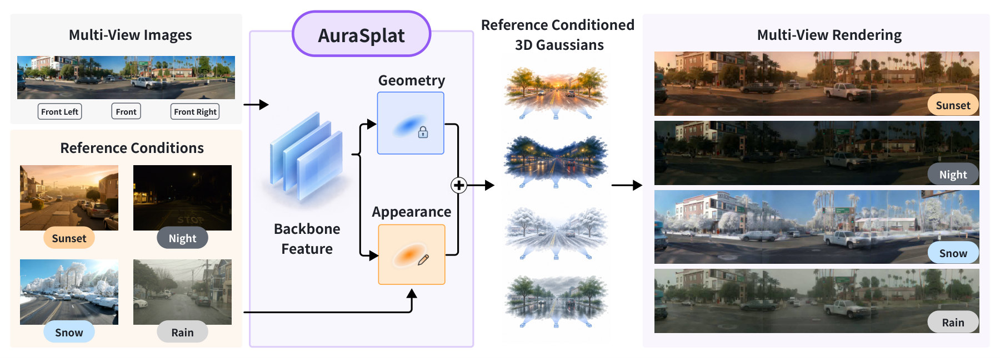
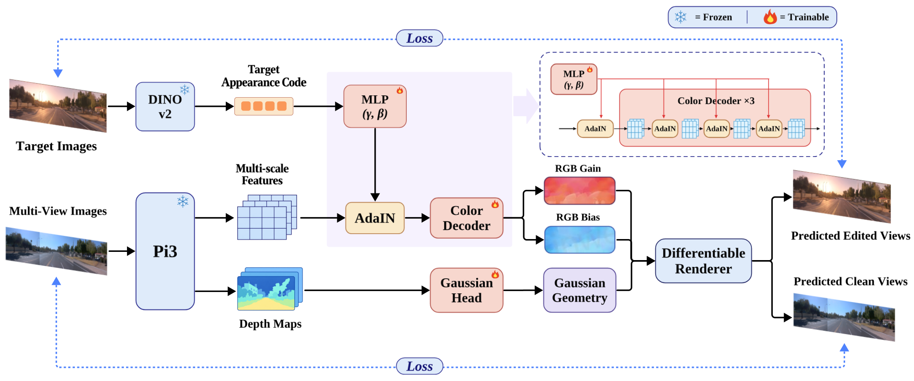
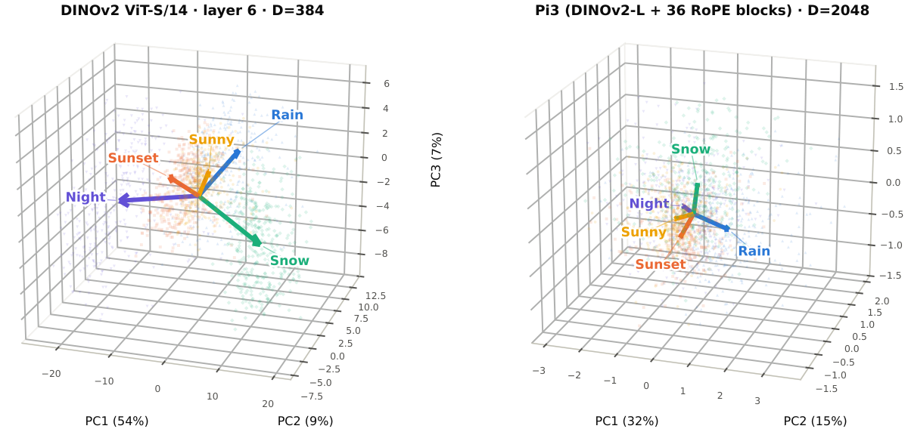
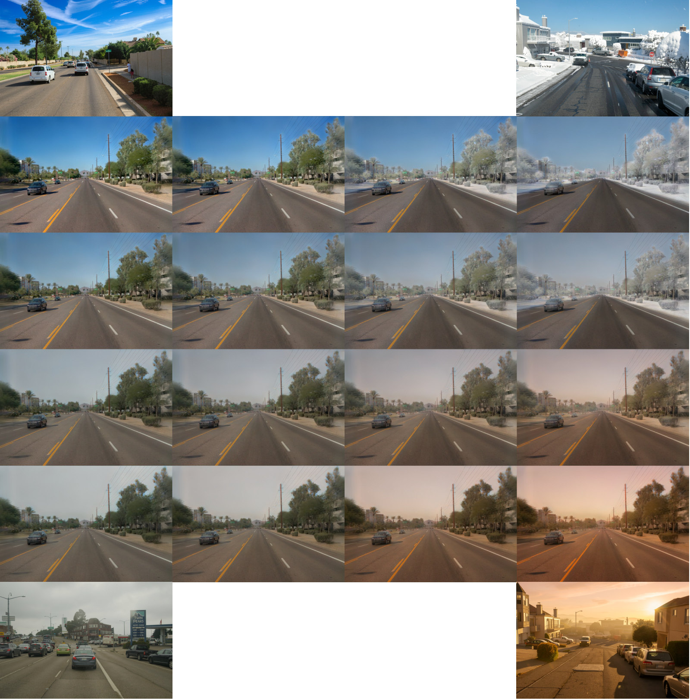

前馈高斯
冻结的 Pi3 主干提供深度与多尺度特征，可训练的高斯头在一次前向中构建场景，无需逐场景优化。
1 北京航空航天大学（buaa.edu.cn）2 Carizon（www.carizon.com）3 杭州电子科技大学（hdu.edu.cn）
PDF 尚未发布
项目演示视频一张参考图 · 所有相机
问题定义
目标：把前馈重建的驾驶场景适配到该地点从未观测过的参考外观。
驾驶仿真需要在降雨、降雪、夜间等稀有条件下测试感知系统。前馈高斯重建速度很快，但只能复现采集时的天气与光照；为每个地点补齐所有天气既昂贵又常常不可行。逐相机独立做扩散编辑速度慢，重叠区域还容易出现外观不一致；逐场景优化则成本更高。
AuraSplat 只重建一次场景，再通过一张可以来自不同场景的参考图迁移外观。微调后的 DINOv2 将参考图编码为全局外观码，一个轻量 MLP 把它转换为通道级调制参数，作用于场景 token 与颜色解码器的多个阶段；颜色解码器输出逐像素、有界的 RGB 增益与偏置图，在保持几何、不透明度和相机位姿不变的前提下更新高斯颜色。

冻结的 Pi3 主干提供深度与多尺度特征，可训练的高斯头在一次前向中构建场景，无需逐场景优化。
DINOv2 多层 CLS token 拼接成 高维参考码，被所有相机和所有高斯共享。
参考条件化的 AdaLN 与颜色解码器预测增益、偏置图，只调整高斯颜色，保持场景几何。
双分支设计
重建分支构建高斯场景，外观分支用一张参考图控制它的颜色。
阶段 I · 重建。 同步相机图像输入冻结的 Pi3 主干，得到逐视角深度图与多尺度特征；可训练的高斯头将这些输出构建为共享的高斯场景。
阶段 II · 外观。 参考图（可以来自不同场景）经微调的 DINOv2-S/14 编码为全局码。该码通过自适应层归一化调制场景内容 token，并条件化 DPT 风格颜色解码器的多个阶段。解码器预测逐像素对齐的 RGB 增益与偏置图，更新生成该像素的高斯颜色。

在大量编辑样本上，同一天气引起的特征变化在不同场景间高度相关。这说明可以用全局外观码做条件，同时保留源视角特征来决定变化在局部如何体现。

每个高斯保留其生成相机、生成像素和源颜色。预测系数被逐通道限制。最后一层卷积零初始化，因此分支从源颜色出发，且只更新 RGB。
源图像监督重建并保持原始外观，编辑目标监督外观迁移。目标可以来自逐视角独立编辑，也可以来自基于 LiDAR 深度构建的共享柱面画布，后者为扩散模型提供重叠相机的公共上下文。参考图由目标经过简单增广合成，损失由重建项与感知项组成。

实验结果

Waymo 与 nuScenes 场景在同样参考图下的结果；每行依次为源图与参考条件结果。
每行为前视相机；完整面板左侧标注了该行使用的参考图。
一条 front 相机长条覆盖所有场景与条件，另外每个场景一个三机位视频。
每个视频只播放一遍时间轴：随着时间推进依次切换条件（源图 → clean（仅 nuScenes）→ 各种参考），列为前视相机。
参考条件迁移以扩散编辑结果为评测目标，源渲染是同一重建在迁移前的结果。
| 方法 | 输出 | PSNR ↑ | Edge ↑ | CLIP ↑ |
|---|---|---|---|---|
| 对齐参考 · 518 × 350 | ||||
| WildSplatter | 源 | 13.47 | 0.810 | 0.7689 |
| WildSplatter | 迁移 | 18.47 | 0.498 | 0.7804 |
| Stylos | 源 | 14.00 | 0.846 | 0.8403 |
| Stylos | 迁移 | 18.77 | 0.547 | 0.8193 |
| AuraSplat | 源 | 14.12 | 0.845 | 0.8384 |
| AuraSplat | 迁移 | 23.34 | 0.766 | 0.9128 |
| 对齐参考 · 256 × 256 | ||||
| Styl3R | 源 | 12.55 | 0.748 | 0.8358 |
| Styl3R | 迁移 | 17.75 | 0.828 | 0.8684 |
| 跨场景参考 · 518 × 350 | ||||
| AuraSplat | 迁移 | 20.16 | 0.746 | 0.9015 |
对齐参考：以当前帧的编辑目标作为参考；跨场景：每种天气使用来自不同场景的固定参考图。AuraSplat 在保持重建质量（源行）的同时提升迁移保真度。
| 天气（帧数） | AuraSplat PSNR | AuraSplat Edge | WildSplatter PSNR | WildSplatter Edge | Stylos PSNR | Stylos Edge | Styl3R PSNR | Styl3R Edge |
|---|---|---|---|---|---|---|---|---|
| 夜晚（2017） | 24.47 | 0.580 | 21.62 | 0.261 | 20.88 | 0.351 | 19.84 | 0.654 |
| 日落（1522） | 24.71 | 0.884 | 18.41 | 0.599 | 19.10 | 0.648 | 19.62 | 0.892 |
| 降雨（1453） | 21.54 | 0.769 | 17.46 | 0.551 | 17.50 | 0.565 | 17.09 | 0.849 |
| 降雪（1514） | 22.34 | 0.803 | 16.85 | 0.650 | 17.55 | 0.647 | 14.64 | 0.918 |
| 晴天（1370） | 23.17 | 0.866 | 16.77 | 0.510 | 18.01 | 0.595 | 16.72 | 0.893 |
| 加权平均 | 23.34 | 0.766 | 18.47 | 0.498 | 18.77 | 0.547 | 17.75 | 0.828 |
每帧以自身的编辑前视图作为参考，并与该目标比较。Styl3R 渲染分辨率为 256 × 256，其余方法为 518 × 350。
| 方法 | PSNR ↑ | SSIM ↑ | LPIPS ↓ |
|---|---|---|---|
| MVSplat | 22.04 | 0.68 | 0.34 |
| DepthSplat | 23.86 | 0.70 | 0.31 |
| UniSplat | 25.98 | 0.76 | 0.24 |
| AuraSplat | 25.45 | 0.77 | 0.23 |
在后续时间戳的多个相机位姿上渲染原始外观，遵循 UniSplat 评测协议；基线数值来自 UniSplat。
实现与评估
同步相机输入冻结的 Pi3 主干，可训练的高斯头构建场景。在 Waymo 上，原始外观重建达到 25.45 dB PSNR、0.77 SSIM 和 0.23 LPIPS。
微调的 DINOv2-S/14 从 {2, 5, 8, 11} 层提取 高维参考码。分支包含 11.58 M 条件 MLP、9.55 M 颜色解码器、4.20 M 内容投影和 0.79 M 参考投影。
模型总参数 1,148.88 M，其中 175.46 M 可训练，训练五个 epoch。在 H20-3e GPU 上、batch size 为 1 时，单个外观条件的完整流程耗时 0.64–0.68 s。
迁移指标使用 202 个 Waymo 场景的 7,876 个评测样本，在前视相机 518 × 350 分辨率上与扩散编辑目标比较。
阅读流程、调制与训练细节。
局限与设计取舍
外观泛化能力取决于训练分布。方法只更新 RGB，因此提供的是全局参考控制，缺少显式的材质或空间变化光照控制。动态物体依赖重建与扩散目标的质量，新视角可能暴露重建空洞。
运动物体继承重建与编辑目标中的误差；当前的外观更新是全局的，一张参考图决定整个场景的外观，因此无法为不同物体或区域分别指定外观。
不同的同天气参考图会产生不同输出。不同参考图会改变色调与亮度，但变化幅度仍远小于源外观到目标的改变；天气类别仍占主导。
在远离输入位姿处渲染，或填补从未观测到的区域时，可能暴露重建空洞，外观迁移无法修复。
关于评测口径的简短回答。
不需要。重建和外观迁移都是前馈的。
不需要。参考图可以来自不同场景；模型仍会按照它的外观进行迁移，只是匹配程度不如参考图与场景相对应时精确。
AURASPLAT / 技术总结
AuraSplat
回到顶部